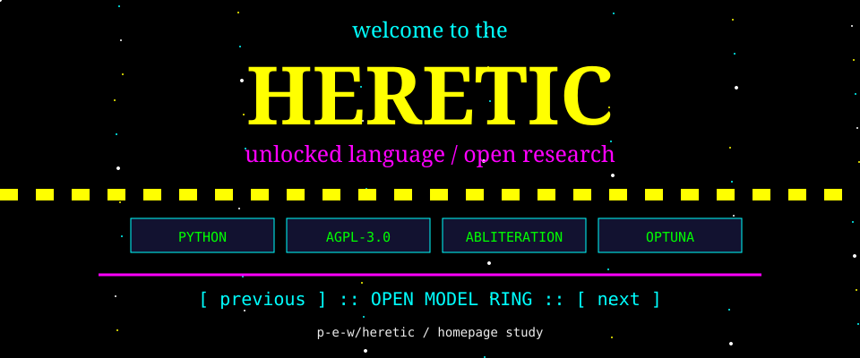
A star-tiled web 1.0 homepage with a serif Heretic welcome, original research badges and a webring strip.
Fully automatic censorship removal for language models
Forty saved random style choices, individually composed for Heretic. Browse images and copyable text, then save your favourite numbers.

A star-tiled web 1.0 homepage with a serif Heretic welcome, original research badges and a webring strip.
Fully automatic censorship removal for language models
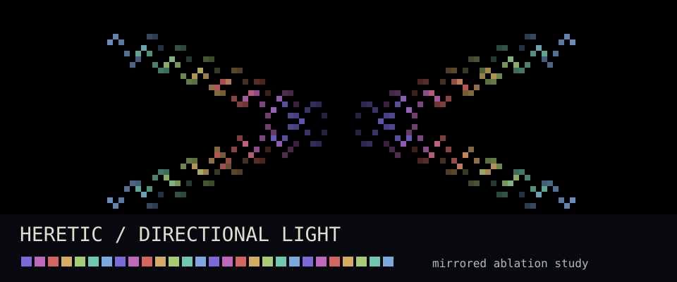
A four-way mirrored light-synth trail, with directional-ablation seeds and a ROM-like status line.
Fully automatic censorship removal for language models
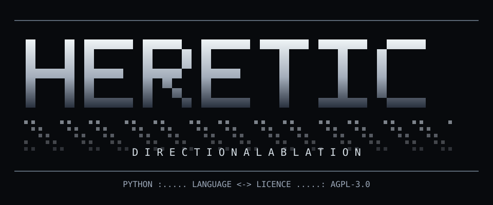
Tall condensed NFO slabs dissolve into shaded debris over mirrored Heretic information fields.
Fully automatic censorship removal for language models
.----------------.
/ open language \
.---'--------------------'---.
/ .---. .---. \
| | o |----| o | |
| '---' '---' |
| \__/ |
\ / \ /
'---------' '-----------'
/\ /\
/__\------------/__\
.-' '-.
'----. .----'
|____|
heretic — open directions, drawn in plain text
Python / directional ablation / Optuna
https://github.com/p-e-w/heretic
Original schematic creature; no borrowed signature.A contour-only ASCII creature made from two connected model nodes, with an open-language caption.
Fully automatic censorship removal for language models
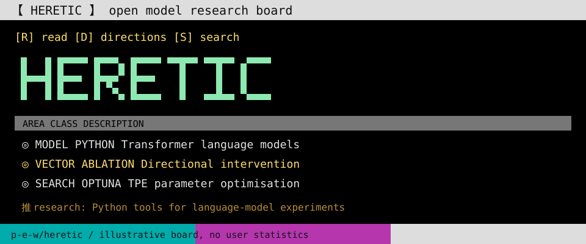
A telnet research board with lenticular brackets, semantic ANSI colours and Heretic component areas.
Fully automatic censorship removal for language models
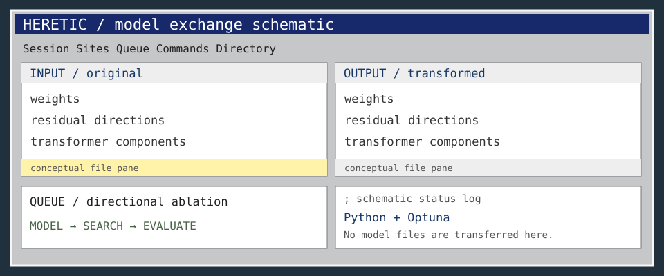
A four-quadrant FXP-style exchange window contrasting original and transformed model concepts.
Fully automatic censorship removal for language models
0 "HERETIC " HN 0 "+--------------+" PRG 0 "| HERETIC |" PRG 0 "+--------------+" PRG 0 "| o---o---o |" PRG 0 "| | |" PRG 0 "| o---+---o |" PRG 0 "+--------------+" PRG 0 "PYTHON " PRG 0 "ABLITERATION " PRG 0 "OPTUNA " PRG 0 "AGPL-3.0 " PRG DECORATIVE DIRECTORY / NO FILE SIZES Directional ablation for language models https://github.com/p-e-w/heretic
A narrow C64 directory picture of a branching model, constrained to quoted 16-character filename cells.
Fully automatic censorship removal for language models
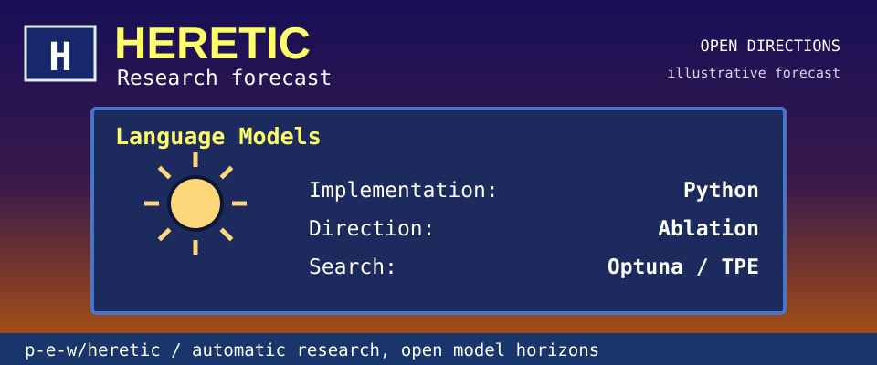
An indigo-to-orange forecast broadcast, with a sun emblem and label/value rows describing Heretic research.
Fully automatic censorship removal for language models
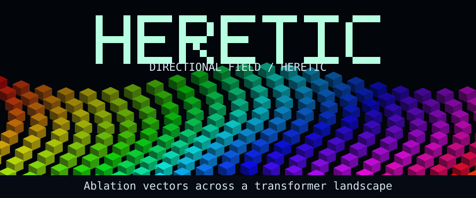
A saturated perspective field of neon cubes, with an original segmented Heretic wordmark anchored above it.
Fully automatic censorship removal for language models
HERETIC / THE TYPE-IN PAGE
A decorative listing, not a program
10 REM HERETIC 100 REM DIRECTIONAL ABLATION
20 REM PYTHON 110 REM TRANSFORMER MODELS
30 REM MODEL RESEARCH 120 REM OPTUNA SEARCH
40 REM OPEN DIRECTIONS 130 REM TPE PARAMETERS
50 REM AGPL-3.0 140 REM READ THE REAL README
60 REM ------------------ 150 REM ------------------
70 REM NO POKES OR BYTES 160 REM NO INVENTED CHECKSUMS
80 REM JUST A HEADER 170 REM ORIGINAL LETTERING
Margin note: keep the research, change the direction.
https://github.com/p-e-w/hereticA two-column magazine type-in page whose REM comments describe Heretic without pretending to execute BASIC.
Fully automatic censorship removal for language models
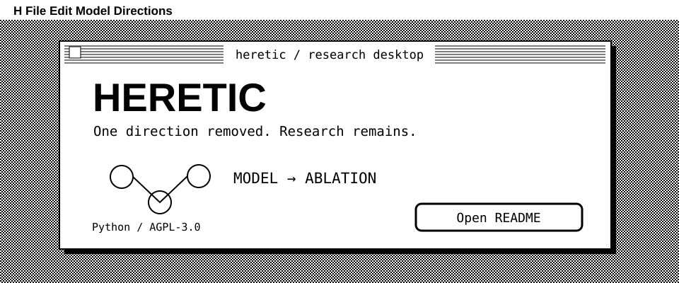
A strictly black-and-white research desktop with striped chrome, hard shadow and a removable direction diagram.
Fully automatic censorship removal for language models
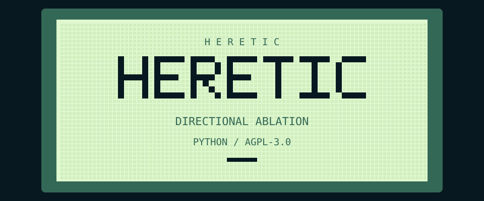
A four-shade LCD boot plate with an original tile wordmark, visible pixel gaps and a held research title screen.
Fully automatic censorship removal for language models
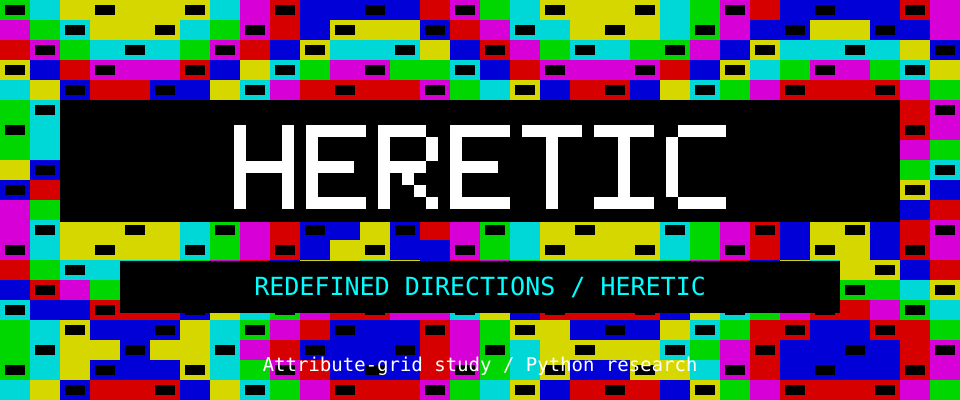
A ZX-style attribute-grid effect, with hard colour cells and a white bitmap title across a black interruption.
Fully automatic censorship removal for language models
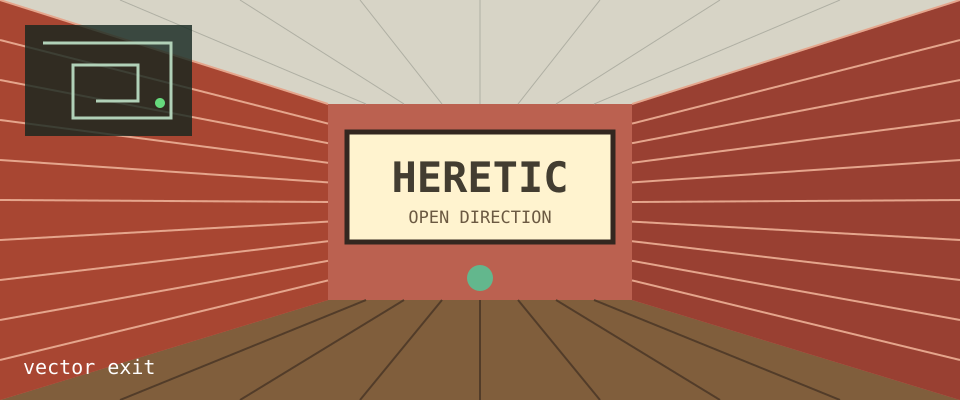
A brick maze corridor whose far-wall Heretic poster and vector-exit map turn ablation into a navigation metaphor.
Fully automatic censorship removal for language models
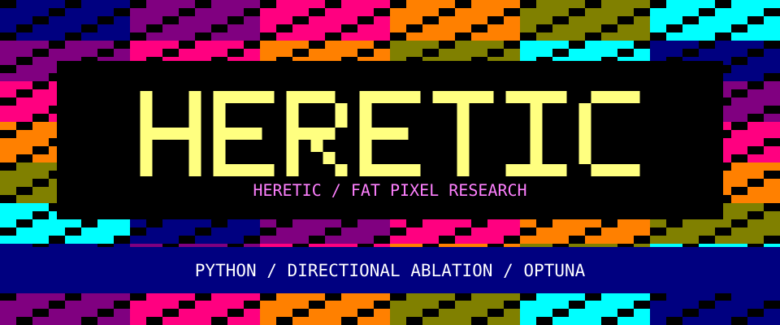
A CPC Mode-0 study with double-wide brick pixels, three-level RGB colours and a heavy golden wordmark.
Fully automatic censorship removal for language models
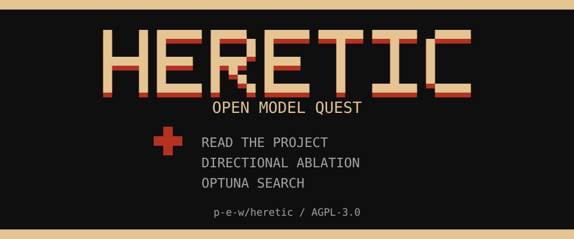
An original four-colour console title card with a stepped wordmark and a directional sprite cursor.
Fully automatic censorship removal for language models
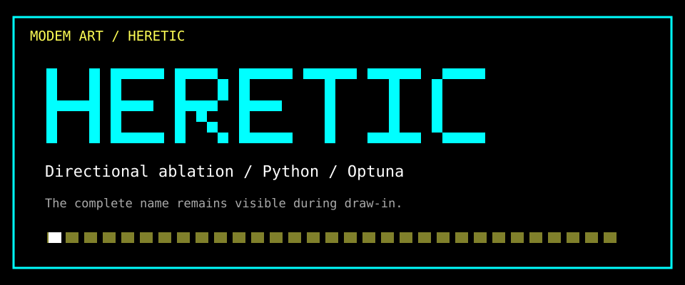
A cyan-and-yellow ANSI stage with a travelling character cursor and complete Heretic block lettering.
Fully automatic censorship removal for language models
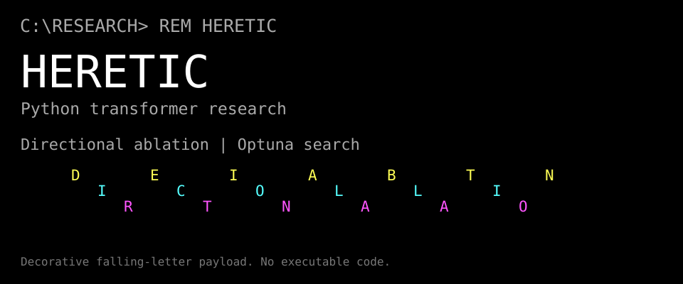
A decorative DOS host screen whose ablation letters fall out of the research transcript while the project name stays fixed.
Fully automatic censorship removal for language models
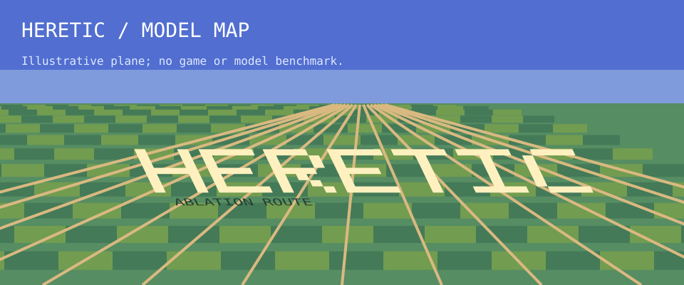
A Mode-7-like ground map with the Heretic wordmark painted onto a receding, textured ablation route.
Fully automatic censorship removal for language models
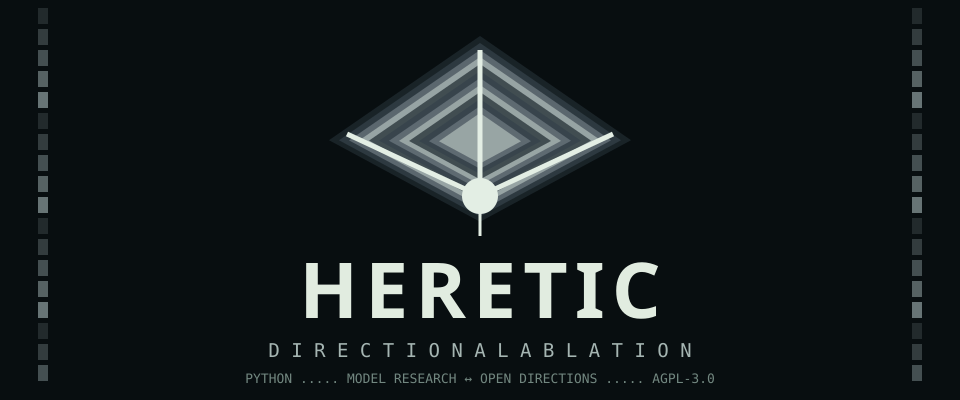
A shaded NFO poster dominated by an abstract model-direction sculpture, with condensed lettering at its foot.
Fully automatic censorship removal for language models
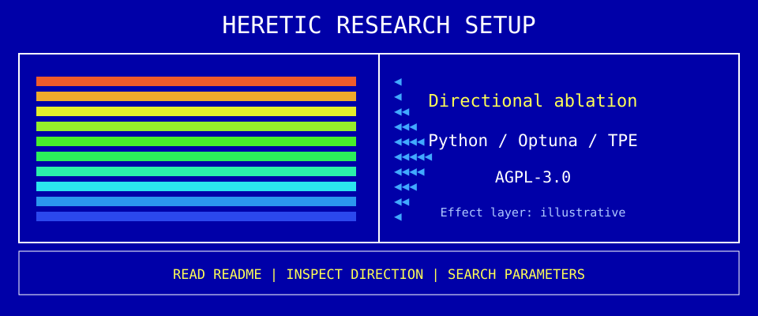
A split BIOS utility whose left panel breaks into orange-magenta rasters while research facts stay on the right.
Fully automatic censorship removal for language models
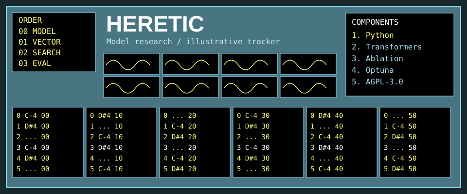
A dense teal FastTracker-like research workstation with scope cells, component list and explicitly decorative pattern notes.
Fully automatic censorship removal for language models
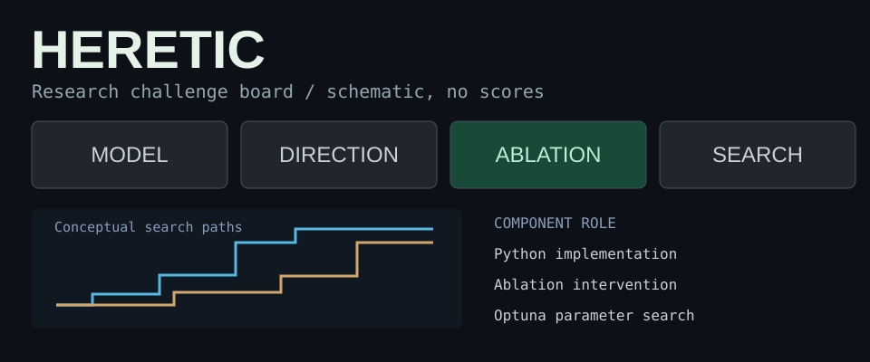
A web-native challenge board with research tiles and conceptual stepped search paths instead of invented leaderboard scores.
Fully automatic censorship removal for language models
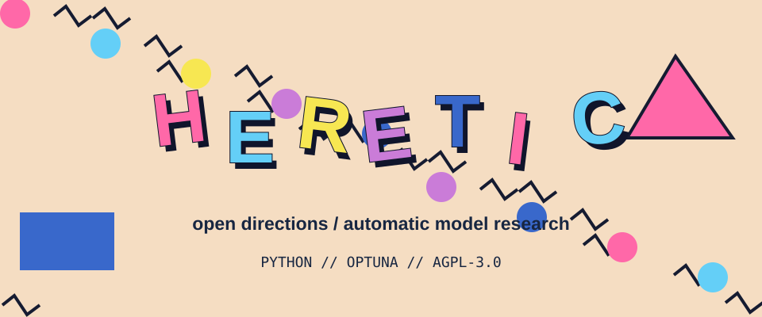
A playful Memphis laminate with independently tilted Heretic letters, hard shadows and scattered research confetti.
Fully automatic censorship removal for language models
HERETIC(1) RESEARCH TOOLS HERETIC(1)
NAME
heretic - automatic censorship removal for language models
SYNOPSIS
heretic MODEL
DESCRIPTION
Directional ablation with automatic parameter optimisation.
The implementation uses Python and Optuna's TPE search.
SEE ALSO
The actual project README, usage guide and AGPL-3.0 licence.
NOTE
Decorative manual-style header, not the project's manual.
https://github.com/p-e-w/hereticA restrained man-page header whose hierarchy comes entirely from capitals, indentation and real Heretic facts.
Fully automatic censorship removal for language models
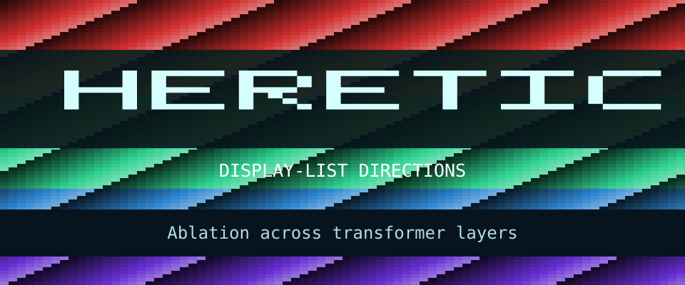
An Atari-style screen of four-wide pixels and hue-shifted luminance ramps, with a stretched original wordmark.
Fully automatic censorship removal for language models
HERETIC RESEARCH CONSOLE / POWER-ON HEADER STUDY File buffers? (decorative prompt) heretic Python / transformer language models Directional ablation / Optuna parameter search Memory counts omitted: this is artwork, not a device report. Ok _ load auto goto list run https://github.com/p-e-w/heretic Project licence: AGPL-3.0
A plain-text BASIC power-on study with the characteristic buffer question, Ok cursor and function-key words.
Fully automatic censorship removal for language models
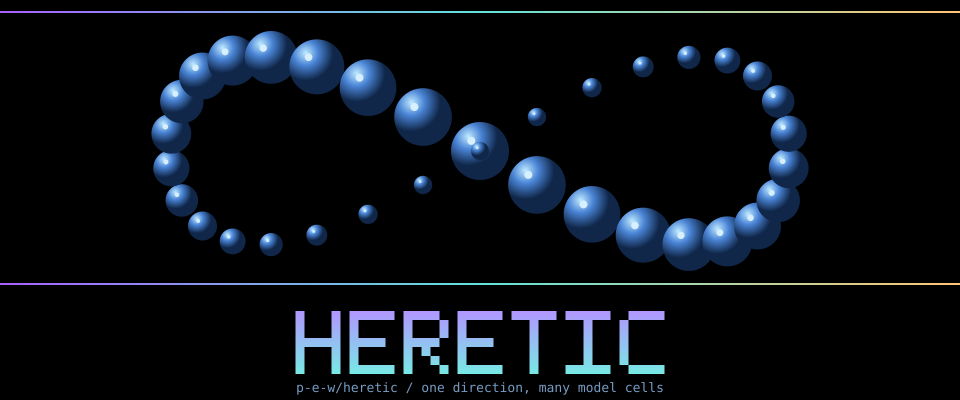
A depth-varying infinity chain of shaded blue bobs, framed by rainbow hairlines and a separate gradient logo strip.
Fully automatic censorship removal for language models
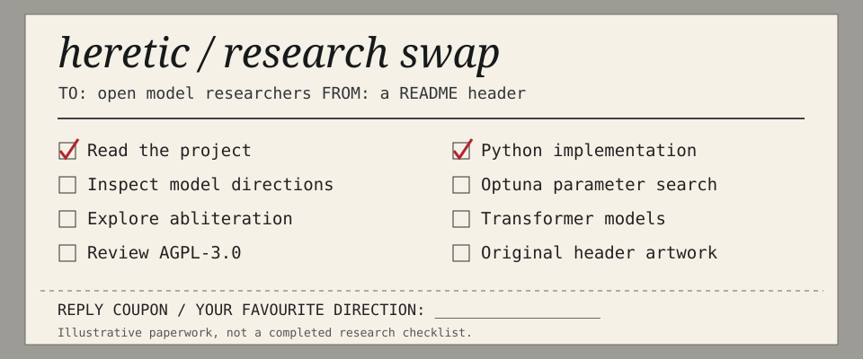
A photocopied swap letter with red pen ticks, a research checklist and a tear-off direction coupon.
Fully automatic censorship removal for language models
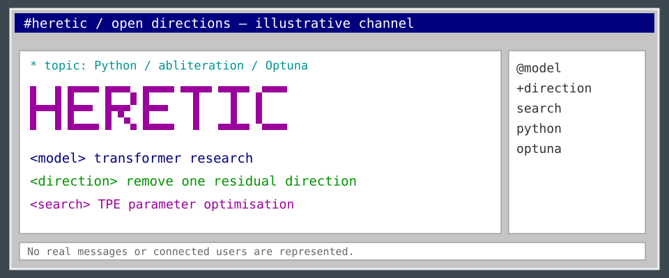
A colour-coded IRC channel with an original Heretic art paste and fictional component nicks in a separate member pane.
Fully automatic censorship removal for language models
+------------------------------------------------------------------+
| = HERETIC READ.ME = |
| model research / Python / AGPL-3.0 |
+------------------------------------------------------------------+
M A I N I N D E X
The project .................................. 01
Directional ablation ......................... 02
Parameter search ............................. 03
- 01 -
THE PROJECT
===========
Automatic censorship removal for language models.
Original header artwork; this is not a release manual.
COMPONENT ROLE
--------------- ------------------------
Python implementation
Ablation model intervention
Optuna / TPE parameter optimisation
------------------------ CUT HERE! --------------------------------
Favourite direction: ____________________________
[ ] inspect the README [ ] compare the artwork
https://github.com/p-e-w/hereticA paged demo READ.ME with a main index, research-component table and cut-here direction form.
Fully automatic censorship removal for language models
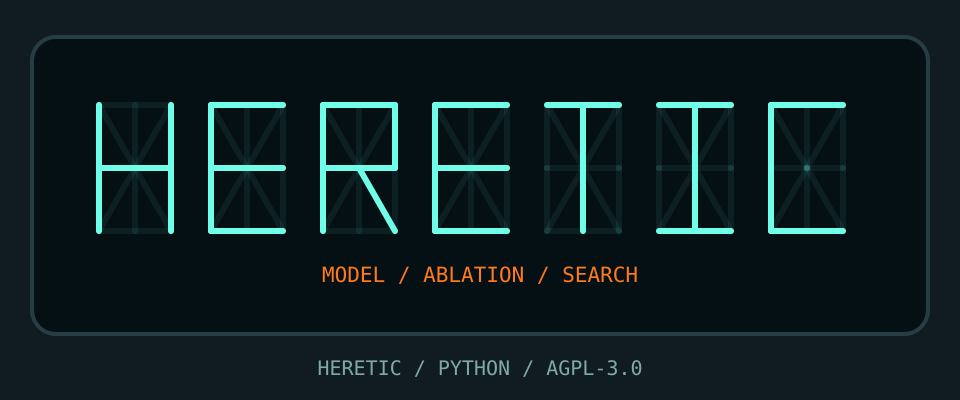
A blue-green starburst VFD faceplate with separately constructed Heretic segment cells and orange research annunciators.
Fully automatic censorship removal for language models
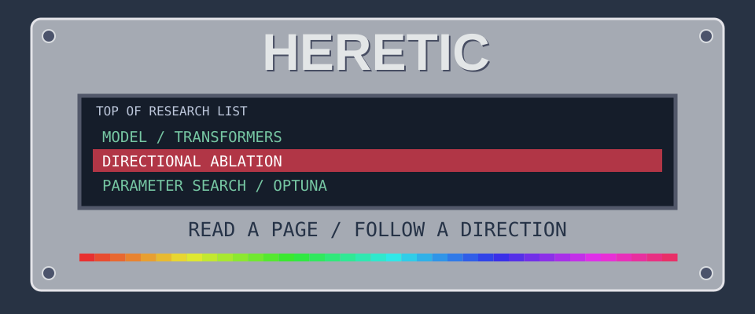
An embossed chip-jukebox research list with a red selected ablation row, metal studs and a rainbow key legend.
Fully automatic censorship removal for language models
#TITLE Heretic / open directions #MEMO Decorative MML score for a README header #MEMO Python + directional ablation + Optuna ; The seven-letter name is an original rhythmic motif. ; No audio playback or project music is implied. A o4 l8 e g a >c <b a e4 r4 B o3 l8 c r g r a r e4 r4 C o2 l4 c g a e r2 D l8 r c r c r c r c r4 AB [ e8 g8 a8 r8 ]2 ; Change one direction. Keep the rest of the phrase. ; https://github.com/p-e-w/heretic ; Project licence: AGPL-3.0
An original MML listing whose seven-note phrase turns the Heretic name into a decorative score.
Fully automatic censorship removal for language models
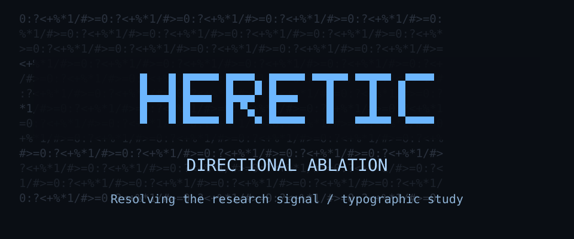
A dim field of scramble cells resolves around a permanently readable blue Heretic name and ablation line.
Fully automatic censorship removal for language models
__ __ ______ _____ ______ ______ ______ ______ / / / / / ____/ / __ / / ____/ /___ / /___ / / ____/ / /_/ / / /__ / /_/ / / /__ / / / / / / / __ / / __/ / __ < / __/ / / / / / / / / / / / /____ / / | | / /____ / / _/ /__ / /___ /_/ /_/ /_____/ /_/ |_| /_____/ /_/ /____/ /_____/ <----------------------------------------------------------> Python :........ LANGUAGE <-> LICENCE ........: AGPL-3.0 Ablation :...... METHOD <-> SEARCH .........: Optuna [ D I R E C T I O N S ] Automatic censorship removal for language models. https://github.com/p-e-w/heretic <----[ original outline lettering for an open direction ]---->
A newly drawn leaning 7-bit outline wordmark with mirrored dot-leader research fields and a long open-ended rule.
Fully automatic censorship removal for language models
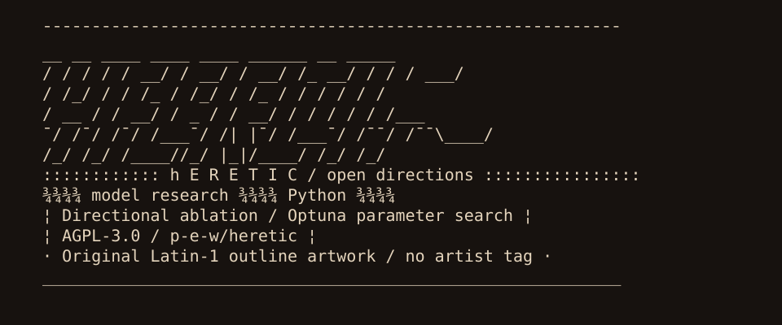
A full-width Latin-1 colly page with exaggerated outline horizontals, macron ceilings and a scene-case Heretic caption.
Fully automatic censorship removal for language models
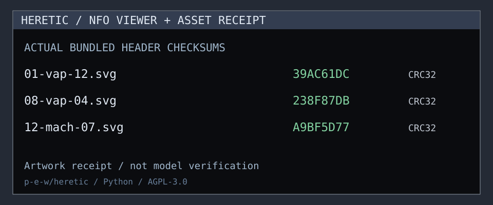
An SFV-style viewer displaying real CRC32 values for three bundled Heretic header assets.
Fully automatic censorship removal for language models
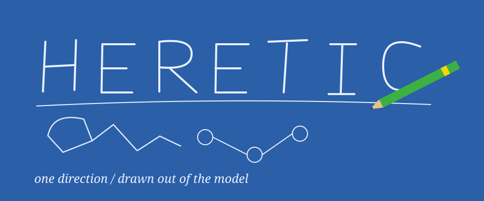
A blue-paper pencil sketch with seven original single-stroke letters, an open model graph and the pencil touching the newest line.
Fully automatic censorship removal for language models
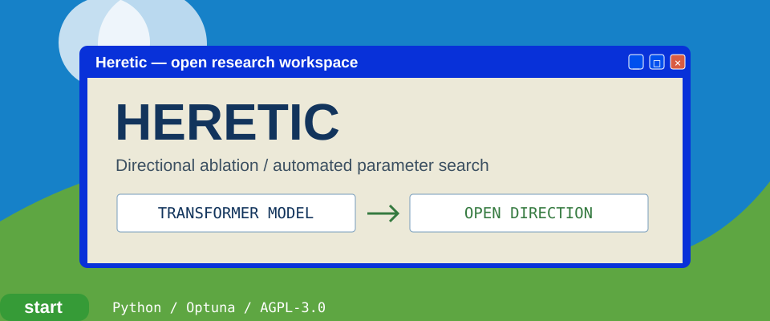
A glossy Luna workspace over an original green hill, with a model-to-open-direction diagram and readable research controls.
Fully automatic censorship removal for language models
The fixed draw uses 40 of 153 distinct briefs. No styles were substituted. Small image details are decorative; project descriptions also appear as normal Markdown. MIT artwork licence · Other examples